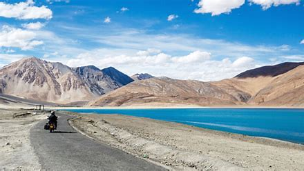
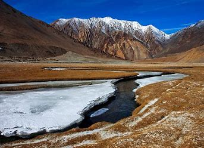

Ladakh Range, southeastern extension of the Karakoram Range, south-central Asia. The range extends southeastward for some 230 miles (370 km) from the mouth of the Shyok River in Galgit-Baltistan (part of the sector of the Kashmir region administered by Pakistan), through Ladakh union territory (a portion of Kashmir administered by India), to the border with the Tibet Autonomous Region of China. With a crest line of about 20,000 feet (6,100 metres), the range parallels the northeast bank of the Indus River. The Ladakh Range is composed of granite rocks of the Ladakh batholith, which is bounded by the Shyok suture zone to the north and the Indus suture zone to the south. The climate is semiarid, with maximum summer temperatures exceeding 86 °F (30 °C) along the lower slopes and mean monthly temperatures in winter well below 32 °F (0 °C) at elevations above about 13,000 feet (4,000 metres). Vegetation is sparse, limited mainly to short grasses and scrub. The Deosai Mountains, located southwest of the Indus River in Pakistani-administered Kashmir, are sometimes considered part of the range.
Ladakh Range

| Ladakh Range | |
|---|---|
|  | |
| Highest Peak | |
| Peak | Rakaposhi |
| Prominence (m) | 2818 |
| Elevation | 7,788 metres (25,551 ft) |
| Coordinates | 36°2′N 74°44′E |
| Geography | |
| Countries | India |
| Borders on | jammu and kashmir , Kailash Range |